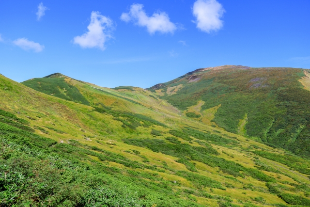
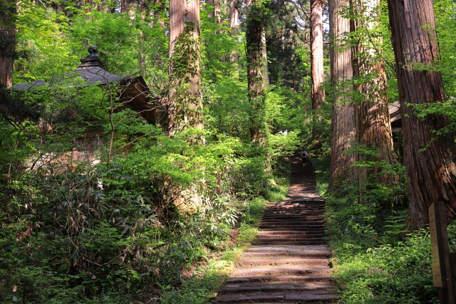

峠山の会 登山計画 2026
Participants
大橋さん、亀山さん、田村
Day 1 — 7/4（土）
大宮から鶴岡・羽黒山へ
大宮 発
🚅 つばさ123号（新庄行）新庄
🚃 JR陸羽西線（酒田行）余目
🚃 JR羽越本線（鶴岡行）鶴岡
🚌 バス（エスモールバスターミナルのりば・羽黒山方面）桜小路バス停（宿坊街）着
荷物を宿に預けて、羽黒山へ

羽黒山 石段参道 ／ ミシュラン・グリーンガイド三つ星
随神門をくぐれば、そこは杉の巨木が立ち並ぶ神域。2,446段の石段を登り、出羽三山の神々が集まる三神合祭殿へ。所要約90分、距離1.7km。初心者でも歩けるコースです。
随神門
神域への入口。ここをくぐると参詣道が始まる
爺杉
樹齢千年以上の巨杉。天然記念物
羽黒山 五重塔
東北最古の五重塔。杉林の中に佇む
三神合祭殿
茅葺き2.1mの大社。月山・湯殿山・羽黒山の三神を祀る
宿坊 神林勝金
¥12,000 / 人Day 2 — 7/5（日）
八合目から頂上、姥沢へ縦走
桜小路BS 発
🚌 バス（月山八合目行）8:00着月山八合目 登山口 ― 登山開始
弥陀ヶ原湿原を抜けて山頂を目指します
月山 頂上（1,984 m）
月山神社参拝 ／ 昼食・休憩(30分) ／ 姥沢方面へ下山
姥ヶ岳 通過
リフト乗り場分岐 ― 姥沢へ下降
姥沢 下山
バス待ち
姥沢BS 発
🚌 バス → 西川IC 15:05着西川ICから徒歩5分 → 西川BS
西川BS 発
🚌 バス → 仙台駅予約制・1ヶ月前から予約開始
仙台駅 着 ― 新幹線へ乗り換え
帰りの新幹線 仙台 → 大宮
Option 1
17:24
大宮 19:03 着
Option 2
17:43
大宮 19:19 着
Option 3
18:31
大宮 19:52 着
仙台で夕食を食べるものいいかも。